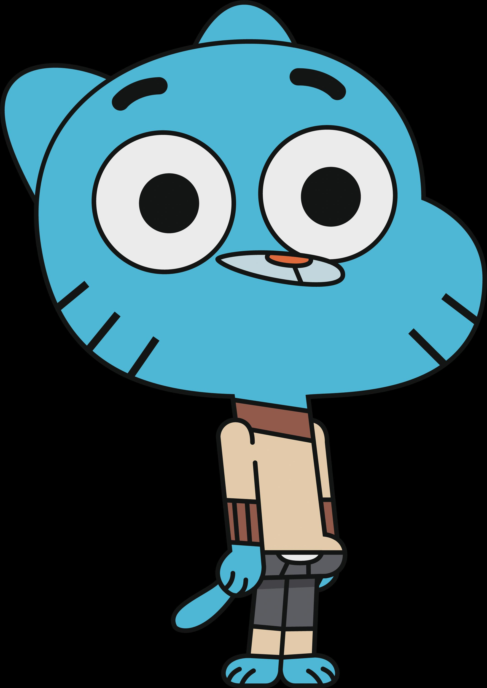

Biografi Karakter

- Gumball (sebelumnya Zach) Tristopher Watterson adalah karakter dan protagonis utama di The Amazing World of Gumball.
- Gumball memiliki saudara angkat, Darwin dan adik kandung berusia empat tahun, Anais.
- Dia adalah kucing laki-laki berwarna biru muda berumur dua belas tahun yang bersekolah di Elmore Junior High
- Gumball adalah salah satu murid di kelas Nona Simian.